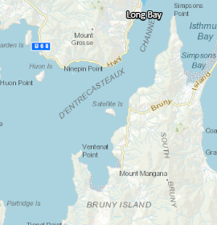
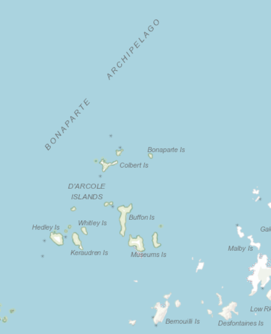
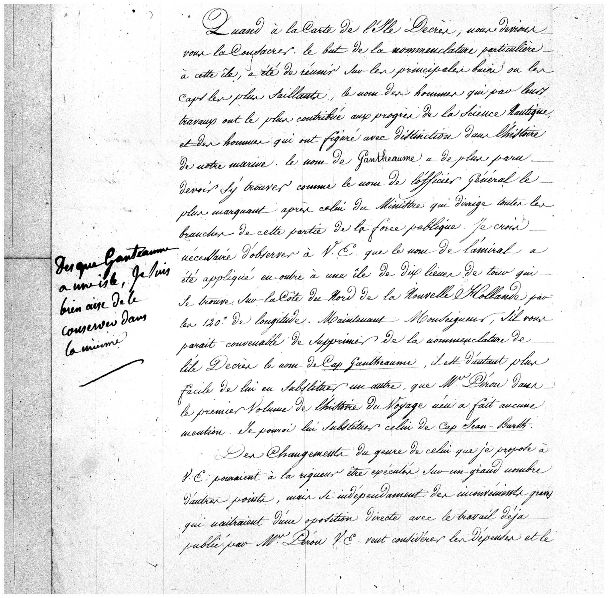
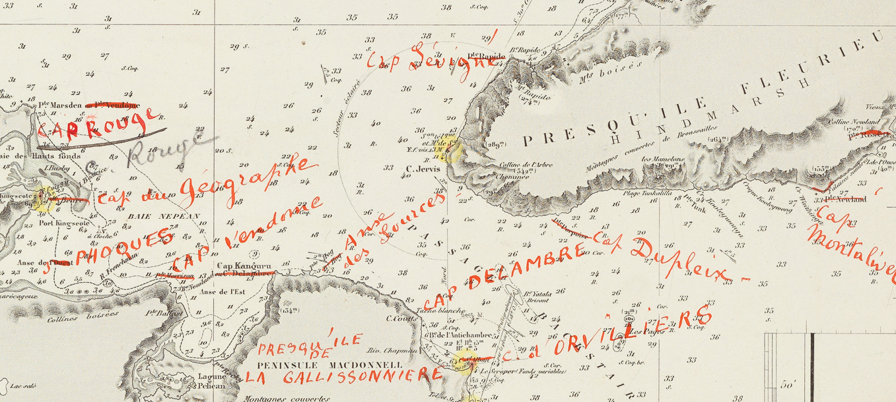

6. The reception of the nomenclatures of the d’Entrecasteaux and Baudin voyages 


Enlarged details from a contemporary map of Australia, showing the d’Entrecasteaux Channel and Bruny Island in Tasmania, and the Bonaparte Archipelago in Western Australia. https://placenames.fsdf.org.au/
Whereas the nomenclature established during the d’Entrecasteaux expedition remained largely uncontested by contemporary authorities, that introduced by François Péron and Louis de Freycinet was rapidly subject to criticism on several fronts. The Ministry of the Interior, in particular, expressed dissatisfaction, as certain influential officials were omitted, while “very obscure individuals were immortalised” — likely referring to relatively anonymous figures such as Forestier, a personnel officer in the Ministry of the Navy and Colonies who had assisted Péron.
Freycinet was also required to justify why the senior naval officer Gantheaume* had been honoured only by the naming of a cape on the large island whose name had been dedicated to Decrès* (now Kangaroo Island). He explained this decision in a letter addressed to Decrès in June 1812.

Letter reproduced on microfilm at the State Library of South Australia (ARG, Series 1, Reel 29).
Original held in the Archives of the Service historique de la Marine (SHM), Vincennes, Series CC7, individual files of naval officers and associated personnel: Louis Claude de Freycinet.
“…The name of Gantheaume appeared to deserve a place there as that of the most distinguished general officer after that of the Minister who directs all branches of this part of the public service. I consider it necessary to observe to Your Excellency that the admiral’s name has also been applied to an island of ten leagues in circumference situated on the northern coast of New Holland, at 120° longitude.
Now, Monseigneur, if it seems appropriate to you to remove from the nomenclature of Decrès Island the name of Cape Gantheaume, it would be all the easier to substitute another, since Monsieur Péron made no mention of it in the first volume of the voyage narrative. I could replace it with the name Cape Jean Bart…”
Decrès responded in a brief marginal note, with a touch of humour:
“As soon as Gantheaume has [like myself] an island [bearing his name], I am quite content to retain him [to keep his name] in mine.”
Further obstacles delayed the publication of the volumes and atlas of the voyage. On the one hand, foreign scholars expressed dissatisfaction, as eminent scientists such as Humboldt were absent from the nomenclature. On the other hand, publication was delayed by the divorce of Napoleon and Joséphine in 1810, followed by his marriage to Archduchess Marie-Louise, daughter of the Emperor of Austria, who became the new Empress of the French.
As a result, when Péron was preparing the historical narrative of the voyage in 1806, he had selected the names of Joséphine and her children as representatives of the imperial family. By 1810, however, when Freycinet was completing the narrative and geographical atlas for publication, Marie-Louise had assumed that role. Until 1814, she, together with Napoleon’s heir, became the central figure of the imperial family. This development introduced an additional difficulty in the publication of Freycinet’s atlas, which now contained names that had become politically inapposite.
As Madame de Chastenay noted in her memoirs:
“The Ministry refused to complete the publication of the Expedition to the Southern Lands, without issuing any formal refusal, and contented itself with obstructing all progress. Several factors contributed to this: the nomenclature of islands, capes, points and rocks had been drawn, no longer from the calendar or from navigators, but from the imperial almanac of the Court and the Institute; foreign scholars were dissatisfied. The name of M. de Humboldt found no place in a work in which very obscure individuals were immortalised, and, through a somewhat unjustifiable caprice, the editor refused even to mention certain officials of the Ministry of the Interior who were then highly influential and attached great importance to it.
But the principal obstacle, under the reign of Marie-Louise, lay in the name of the still-living Joséphine, and one knows how insurmountable obstacles can become when they are not openly acknowledged…”
Roserot, A. (ed.), Mémoires de Mme de Chastenay, 1771–1815, vol. 2, 1896–1897, pp. 143–144. Source: Bibliothèque nationale de France
http://catalogue.bnf.fr/ark:/12148/cb340194321
The imperial nomenclature introduced by Péron and Freycinet became even more problematic when Freycinet’s nautical and geographical account, together with the atlas, was finally published in 1815, after the fall of the Napoleonic regime and the exile of the emperor to Saint Helena. Fully aware of the political inappropriateness of these names in the context of the Bourbon Restoration, Freycinet sought to justify their publication:
“Before publishing myself the nautical part of the voyage and continuing Péron’s account, I would have wished to alter a nomenclature now rejected by the political and moral situation of France and Europe; but the first volume had already been in circulation for several years, the second was eagerly awaited by a great number of subscribers; and it was no doubt rightly considered more important to satisfy the public than to suppress the continuation of a work whose nomenclature, in the final analysis, cannot affect the nature or importance of the facts.”
Péron, F., continued by Freycinet, L., Voyage de découvertes aux Terres australes, 1816 edition, vol. 2, p. VIII.
Even more controversial was the infringement, over extensive stretches of coastline, of the European principle of the “right of first discovery”, claimed by the British navigator Matthew Flinders, which granted him naming rights over parts of the southern coast of Australia. The disregard of this convention provoked irritation within the British Admiralty. As a consequence, more than half of the place names assigned by Péron and Freycinet were removed and replaced by British names during the process of colonisation.
This situation prompted Alphonse de Fleurieu, grand-nephew of Charles de Fleurieu, to intervene with the British government in the late nineteenth century in an effort to secure the restoration of certain names relating to places left unnamed by Flinders or by earlier navigators. Of the 32 names he claimed in South Australia, eight were reinstated, including that of the Fleurieu Peninsula.

Australie (côte sud) - Detail
The French names shown in red are those which Alphonse de Fleurieu sought to have reinstated, whether successfully or not.
Source: Archives nationales de France, Golfe de Spencer : Australie (côte sud), feuille n° 5.
Cote : GE BB-3 (3582-1912).
Bibliothèque nationale de France (Paris-Tolbiac).
Today, approximately half of the place names assigned during the d’Entrecasteaux and Baudin expeditions — around 360 in total — still appear, in anglicised form, in the Composite Gazetteer of Australia.
6. La réception des nomenclatures des voyages de d’Entrecasteaux et de Baudin
Enlarged details from a contemporary map of Australia, showing the d’Entrecasteaux Channel and Bruny Island in Tasmania, and the Bonaparte Archipelago in Western Australia. https://placenames.fsdf.org.au/
Alors que la nomenclature de d’Entrecasteaux n’avait pas été contestée par les autorités de l’époque, celle de Péron et Freycinet fut rapidement critiquée à plusieurs niveaux. Le ministère de l’Intérieur s’en trouva notamment contrarié, dans la mesure où certains hauts fonctionnaires influents n’y figuraient pas, tandis que des « hommes très obscurs étaient immortalisés » — sans doute en référence à des agents relativement anonymes comme Forestier, responsable du personnel au ministère de la Marine et des Colonies, qui avait aidé Péron.
En outre, Freycinet dut justifier pourquoi le haut officier de marine Gantheaume* n’avait été honoré que par le nom d’un cap sur la grande île dont le nom était consacré à Decrès* (aujourd’hui Kangaroo Island). Il expliqua ce choix dans une lettre adressée en juin 1812 à Decrès.
Lettre reproduite sur microfilm à la State Library of South Australia (ARG, série 1, bobine 29).
Original conservé au Service historique de la Marine (SHM), Vincennes, série CC7, dossiers individuels des officiers de Marine et personnels assimilés : Louis Claude de Freycinet.
« …Le nom de Gantheaume a de plus paru devoir s’y trouver comme celui de l’officier général le plus marquant après celui du ministre qui dirige toutes les branches de cette partie de la force publique. Je crois devoir observer à V.E. [Votre Excellence] que le nom de l’amiral a été appliqué, en outre, à une île de dix lieues de tour située sur la côte nord de la Nouvelle-Hollande, par les 120° de longitude.
Maintenant, Monseigneur, s’il vous paraît convenable de supprimer de la nomenclature de l’île Decrès le nom du cap Gantheaume, il est d’autant plus facile de lui en substituer un autre que Monsieur Péron, dans le premier volume de l’histoire du voyage, n’en a fait aucune mention. Je pourrais lui substituer celui de cap Jean Bart… »
Decrès commenta la question dans une brève note en marge de la lettre, avec une pointe d’humour :
« Dès que Gantheaume a [comme moi] une île [qui porte son nom], je suis bien aise de le conserver [de garder aussi son nom] dans la mienne. »
D’autres obstacles retardèrent la poursuite de la publication des volumes et de l’atlas du voyage. D’une part, des savants étrangers se montrèrent mécontents, des scientifiques éminents comme Humboldt ne figurant pas dans la nomenclature. D’autre part, la publication fut retardée par le divorce de Napoléon et Joséphine en 1810, suivi du mariage avec l’archiduchesse Marie-Louise, fille aînée de l’empereur d’Autriche, devenue la nouvelle impératrice des Français.
En conséquence, lorsque Péron travaillait au récit historique du voyage en 1806, il avait choisi les noms de Joséphine et de ses enfants comme représentants de la famille impériale ; mais en 1810, lorsque Freycinet achevait le récit et l’atlas géographique en vue de la publication, c’était Marie-Louise qui occupait cette position. Jusqu’en 1814, elle devint, avec l’enfant qu’elle eut de Napoléon, la figure centrale de la famille impériale. Cela ajouta une difficulté supplémentaire à la publication de l’atlas de Freycinet, qui comportait désormais des noms devenus politiquement inadaptés.
Comme l’explique sans détour Madame de Chastenay dans ses mémoires :
« Le ministère se refusait à terminer la publication de l’Expédition aux Terres australes, sans toutefois prononcer de refus explicite, se contentant d’entraver toutes les démarches. Plusieurs causes y contribuaient : la nomenclature des îles, caps, pointes et rochers avait été empruntée, non plus au calendrier ou aux navigateurs, mais à l’almanach impérial de la Cour et de l’Institut ; les savants étrangers n’en étaient pas satisfaits. Le nom de M. de Humboldt n’avait pas de place dans un ouvrage où des hommes très obscurs étaient immortalisés, et, par une boutade d’humeur peu excusable, le rédacteur s’était refusé à mentionner certains employés alors fort influents du ministère de l’Intérieur, qui y attachaient un grand prix.
Mais le principal obstacle résidait, sous le règne de Marie-Louise, dans le nom de Joséphine encore vivante, et l’on sait à quel point deviennent invincibles des obstacles que l’on n’avoue pas… »
Roserot, A. (éd.), Mémoires de Mme de Chastenay, 1771–1815, vol. 2, 1896–1897, p. 143–144. Source : Bibliothèque nationale de France
http://catalogue.bnf.fr/ark:/12148/cb340194321
La nomenclature impériale de Péron et Freycinet devint plus inappropriée encore lorsque le récit nautique et géographique de Freycinet, ainsi que l’atlas, furent publiés en 1815, après la chute du régime napoléonien et l’exil de l’empereur à Sainte-Hélène. Conscient de cette inadaptation politique dans le contexte de la Restauration, Freycinet tenta de justifier la publication en écrivant :
« Avant de publier moi-même la partie nautique du voyage et de continuer la relation de Péron, j’aurais voulu changer une nomenclature que repousse aujourd’hui la situation politique et morale de la France et de l’Europe ; mais le premier volume était déjà dans le commerce depuis plusieurs années, le second était impatiemment attendu par un grand nombre de souscripteurs ; et sans doute a-t-on eu raison de penser qu’il était plus important de satisfaire le public que de supprimer la suite d’un ouvrage dont, en dernière analyse, la nomenclature ne peut nuire à la nature ni à l’importance des faits. »
Péron, F., poursuivi par Freycinet, L., Voyage de découvertes aux Terres australes, édition 1816, tome 2, p. VIII.
Plus controversée encore fut l’atteinte, sur de larges portions, au principe européen du « droit de première découverte », revendiqué par le navigateur britannique Matthew Flinders, qui lui conférait des droits de dénomination sur certaines parties de la côte méridionale de l’Australie. Le non-respect de cette pratique irrita l’Amirauté britannique. En conséquence, plus de la moitié des noms de lieux attribués par Péron et Freycinet furent supprimés et remplacés par des noms britanniques lors de la colonisation.
Cette situation conduisit le petit-neveu de Charles de Fleurieu, Alphonse de Fleurieu, à intervenir auprès du gouvernement britannique à la fin du XIXe siècle afin d’obtenir la restitution de certains noms relatifs à des lieux laissés sans dénomination par Flinders ou par des navigateurs antérieurs. Sur les 32 noms revendiqués en Australie-Méridionale, huit furent rétablis, dont celui de la péninsule Fleurieu.
Australie (côte sud) — détail.
Les noms français figurant en rouge correspondent à ceux dont Alphonse de Fleurieu sollicita la restitution.
Source : Archives nationales de France, Golfe de Spencer : Australie (côte sud), feuille n° 5.
Cote : GE BB-3 (3582-1912).
Bibliothèque nationale de France, site Tolbiac.
Aujourd’hui, environ la moitié des noms de lieux issus des expéditions de d’Entrecasteaux et de Baudin — soit environ 360 — figurent encore, sous une forme anglicisée, dans le Composite Gazetteer of Australia.